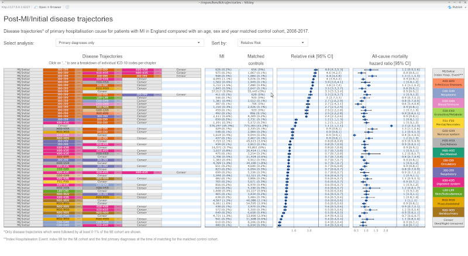

Interactive plot for the cumulative incidence function
Health outcomes after myocardial infarction: a population study of 56 million people in England. M Hall, L Smith, J Wu, C Hayward, J Batty, P Lambert, H Hemingway, C Gale

Interactive plot for Post-MI disease trajectories
Disease trajectories following myocardial infarction: insights from process mining of 145 million hospitalisation episodes. C Hayward, J Batty, D Westhead, CP Gale, J Wu, M Hall.
